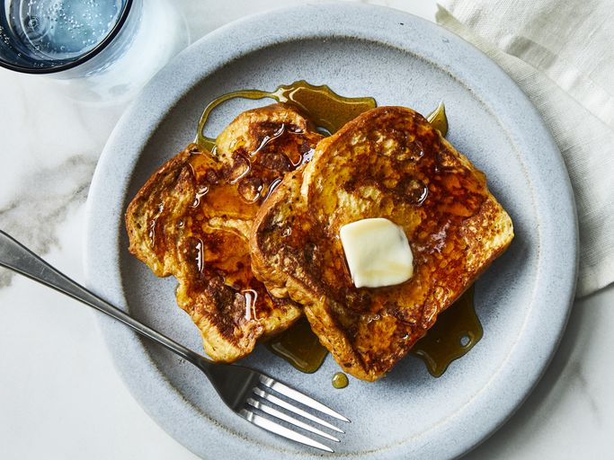

./French Toast

What is French Toast ?
French toast is a dish of sliced bread soaked in beaten eggs and often milk or cream, then pan-fried.
#ingredients
- 2 large eggs
- ⅔ cup milk
- 1 teaspoons vanilla extract (Optional)
- ¼ teaspoon ground cinnamon (Optional)
- salt to taste
- 6 thick slices bread
- 1 tablespoon unsalted butter, or more as needed
#steps
- gather all ingredients
- whisk milk, eggs, vanilla, cinnamon, and salt together in a shallow
- lightly butter a frying pan and heat over medium-high heat.
- Dunk bread in the egg mixture, soaking both sides.
- Transfer to the hot skillet and cook until golden, 3 to 4 minutes per side.
- "French toast is prepared and ready to be savored."
back to home